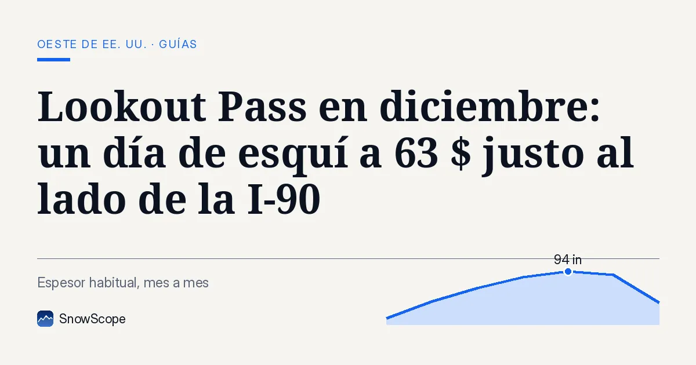

Lookout Pass en diciembre: un día de esquí a 63 $ justo al lado de la I-90
Lookout Pass está justo en la línea entre Idaho y Montana en la I-90, con un forfait para adultos entre semana a 63 $ si lo reservas con antelación. Las pistas altas acumulan nieve fiable en diciembre, pero la base se mantiene fina hasta después de Navidad.
Consulta la previsión de nieve en tiempo real de Lookout Pass en la app SnowScopeEspesor de nieve, alertas de nieve polvo y mapa 3D, gratis.
Datos rápidos: ubicación, terreno, precio del forfait
Lookout Pass es una estación pequeña a la que puedes acceder saliendo de la I-90, situada entre Wallace, Idaho y la zona de Missoula. El terreno cartografiado va desde 4.510 ft (1.374 m) hasta 6.150 ft (1.875 m)—un desnivel de 501 m (1.644 ft)—con 5 remontes y aproximadamente 23 mi (37 km) de pistas.
Para la temporada 2026-27, reserva tu forfait entre semana con antelación a 63 $ (o 66 $ en taquilla). Los fines de semana suben a 75 $ reservado, 78 $ en taquilla. El período navideño cuesta 79 $ o 82 $. Sin sorpresas: precios directos que recompensan un poco de planificación.

Dónde está la nieve en diciembre
Principios de diciembre es apretado en la base: un 1 de diciembre típico tiene 11 cm (29 cm), y solo el 20% de los inviernos alcanza 20 cm (50 cm) en esa fecha. La zona media (5.330 ft / 1.624 m) es más favorable—el 50% de los inviernos tienen 20 cm (50 cm) o más—pero la parte alta (6.150 ft / 1.875 m) es lo mejor, con el 65% de los inviernos en buenas condiciones en esa fecha.
El 15 de diciembre la historia cambia. La zona media suele tener 30 cm (75 cm), con el 85% de los inviernos por encima de 20 cm (50 cm). La parte alta promedia 37 cm (95 cm), y el 96% de los inviernos se mantiene por encima de ese umbral. La base aún se queda atrás con 18 cm (45 cm), aunque el 39% de los inviernos alcanza el nivel de 20 cm (50 cm).
Día de Navidad, la base se pone al día con 23 cm (59 cm) en el 61% de los inviernos. La zona media alcanza 38 cm (97 cm) con fiabilidad del 93%, y la parte alta está en 48 cm (122 cm) con el 96% de los inviernos por encima de 20 cm (50 cm). Para Nochevieja, la zona media está en 45 cm (114 cm), casi seguramente esquiable.

Qué ha cambiado en las últimas décadas
En los primeros 15 inviernos registrados (1980-81 a 1994-95), la zona media el 15 de diciembre promedió 33 cm (84 cm) y cada invierno superó 20 cm (50 cm). En los últimos 15 inviernos (2011-12 a 2025-26), el valor típico bajó a 26 cm (66 cm), con el 73% de los inviernos cruzando ese umbral.
El invierno pasado fue notablemente escaso: la zona media tenía solo 13 cm (34 cm) el 15 de diciembre, aunque para Navidad subió a 22 cm (56 cm). Esta escasez de principios de diciembre es parte del patrón ahora, incluso si a mediados y finales de mes suele rellenarse.
Cómo se compara: Schweitzer y Snowbowl
Schweitzer Mountain, encima de Sandpoint, tiene más terreno y nieve más profunda en la cima: el 15 de diciembre típicamente muestra 54 cm (138 cm) en la cumbre versus los 37 cm (95 cm) de Lookout. Pero la zona media de Schweitzer (5.200 ft / 1.585 m) promedia 35 cm (90 cm) en esa fecha—solo 5 cm (12 cm) más que Lookout. Un pack de 3 días en Schweitzer cuesta 249 $, o 83 $ por día.
Montana Snowbowl cerca de Missoula cobra 78 $ entre semana y 85 $ en fines de semana. Su zona media (6.260 ft / 1.909 m) el 15 de diciembre típicamente tiene 30 cm (76 cm)—lo mismo que la zona media de Lookout. El forfait entre semana de Lookout a 63 $ lo hace 15 $ más barato por día, con nieve equivalente en zona media.
Cuándo ir y qué esperar
Principios de diciembre es una apuesta: buena nieve (definida como un promedio semanal de 20 cm / 50 cm o más) aparece en solo el 30% al 37% de los inviernos en las dos primeras semanas. Para finales de diciembre—del 14 en adelante—esa proporción salta al 52% al 65%, lo que significa que la segunda mitad del mes es mucho más probable que ofrezca buenas condiciones.
Los remontes altos son tu red de seguridad antes de Navidad. La base puede ser fina, con hierba expuesta o nieve fina escondiendo rocas. Después de Navidad, conforme la base se construye, ganas más opciones. Wallace, el pequeño pueblo minero debajo del paso, tiene moteles económicos y comederos si quieres quedarte cerca de los remontes.
Consejos para esquiadores
- Reserva una fecha entre semana con antelación para asegurar el forfait de 63 $; los fines de semana y festivos cuestan mucho más.
- Esquía los remontes altos en principios de diciembre. La parte alta de la montaña está en 37 cm (95 cm) el 15 de diciembre en un invierno típico, mientras que la base puede estar despejada. Planifica tus descensos más arriba.
- Si vas entre el 14-27 de diciembre, buena nieve aparece en el 52-65% de los inviernos en zona media. La segunda mitad del mes es mucho más fiable que la primera mitad.
- Comprueba el informe de paso de la I-90 antes de conducir. Los requisitos de cadenas aparecen en tormentas; el paso está a 4.680 ft (1.427 m) y cierra ocasionalmente en invierno.
- Los últimos 15 inviernos han sido más escasos que los primeros 15 del registro: planifica la nieve pero verifica las condiciones en tiempo real antes de reservar.
Sobre estas cifras
Los espesores de nieve de las estaciones son la nieve más profunda en las pistas altas en la fecha indicada; son estimaciones para una zona, no una medida en un punto. Las previsiones pueden cambiar. Consulta siempre el boletín oficial de aludes antes de salir fuera de pista.
Boletines oficiales de aludes: avalanche.org (US national portal)
Citar este informe
Para investigación, docencia o prensa: cifras y gráficos reutilizables libremente bajo CC BY 4.0 con esta cita.
SnowScope (2026), Lookout Pass en diciembre: un día de esquí a 63 $ justo al lado de la I-90, https://snowscope.app/blog/es/2026/11/lookout-pass-december-skiing-63-dollar-midweek.html, consultado el 2026-11-14
SnowScope (Atlas Labs). (2026, November 14). Lookout Pass en diciembre: un día de esquí a 63 $ justo al lado de la I-90. SnowScope snow reports. https://snowscope.app/blog/es/2026/11/lookout-pass-december-skiing-63-dollar-midweek.html
BibTeX
@misc{snowscope2026lookoutpassdecemberskiin,
author = {{SnowScope (Atlas Labs)}},
title = {Lookout Pass en diciembre: un día de esquí a 63 $ justo al lado de la I-90},
year = {2026},
month = nov,
howpublished = {\url{https://snowscope.app/blog/es/2026/11/lookout-pass-december-skiing-63-dollar-midweek.html}},
note = {Published 2026-11-15 09:34 UTC; accessed 2026-11-14}
}· CC BY 4.0 · Métodos, datos y herramientas →
Lookout Pass: nieve y temperatura según la altura, este invierno vs el pasado (herramientas) →
Sigue Lookout Pass
Gratis: un aviso cuando llega la nieve y la previsión cada mañana.